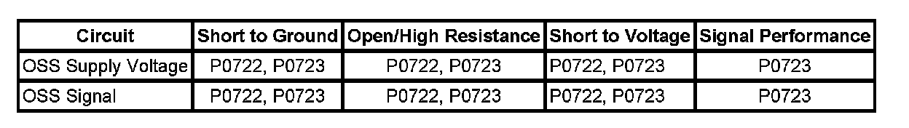
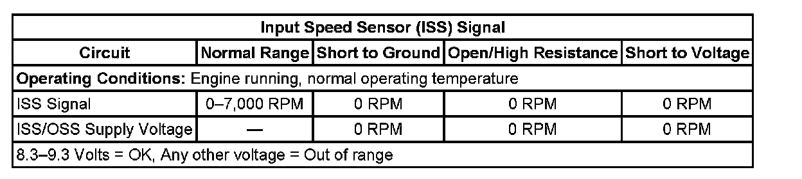
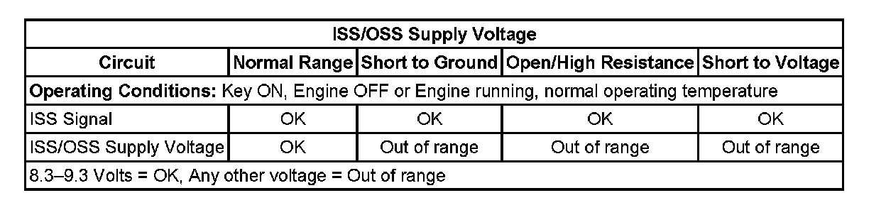

6L50 / 6L80 / 6L90 Automatic Transmission
DTC P0722 or P0723
DTC Descriptors
DTC P0722
Output Speed Sensor (OSS) Circuit Low Voltage
DTC P0723
Output Speed Sensor (OSS) Intermittent
Diagnostic Fault Information
Perform the Diagnostic System Check - Vehicle prior to using this diagnostic procedure. Initial Inspection and Diagnostic Overview

Typical Scan Tool Data


Circuit/System Description
The output speed sensor (OSS) is a hall-effect type sensor. The OSS mounts to the control valve upper body assembly and connects to the control solenoid (w/body and TCM) valve assembly through a wire harness and connector. The sensor faces the output shaft machined teeth surface. The sensor receives 8.3-9.3 volts on the input/output speed sensor (ISS/OSS) supply voltage circuit from the transmission control module (TCM). As the output shaft rotates, the sensor produces a signal frequency based on the machined surface of the output shaft. This signal is transmitted through the OSS signal circuit to the TCM. The TCM uses the OSS signal to determine line pressure, transmission shift patterns, torque converter clutch (TCC) slip speed and gear ratio.
Conditions for Running the DTC
DTC P0722
^ No ISS DTC P0717.
^ No OSS DTC P0723.
^ The selected range is not PARK or NEUTRAL.
^ The vehicle speed is greater than 16 km/h (10 mph).
^ The transmission input speed is between 1,500-5,000 RPM.
^ The engine speed is between 3,000-5,000 RPM.
^ The calculated throttle position is greater than 8 percent.
DTC P0723
^ No ISS DTCs P0716 or P0717.
^ No OSS DTC P0722.
^ The engine run time is greater than 5 seconds.
^ Greater than 6 seconds since last range change.
Conditions for Setting the DTC
DTC P0722
^ The TCM detects no output shaft speed when there is vehicle speed.
^ The transmission output speed is less than 200 RPM for 5 seconds.
DTC P0723
^ The TCM detects an unrealistic drop in output shaft speed.
^ ISS DTC P0723 has not failed this ignition.
^ The transmission output speed is 1,000 RPM or greater for 2 seconds.
^ The transmission output speed drops 1,300 RPM for greater than 4 seconds and does not recover.
Action Taken When the DTC Sets
^ The TCM freezes transmission adaptive functions.
^ The TCM turns OFF all solenoids.
Conditions for Clearing the DIC/DTC
DTCs P0722 and P0723 are Type A DTCs.
Diagnostic Aids
Inspect the OSS, harness, connector and control solenoid (w/body and TCM) valve assembly pins for metallic debris and output shaft machined face for damage or misalignment. Proper torque of the OSS mounting bolt is critical to proper OSS operation. Use the J 35616 GM-approved terminal test kit for any test that requires probing the control solenoid (w/body and TCM) valve assembly harness connector or a component harness connector.
Reference Information
Schematic Reference
Automatic Transmission Controls Schematics
Connector End View Reference
^ Automatic Transmission Inline 16-Way Connector End View
^ Automatic Transmission Internal Connector End Views
^ Automatic Transmission Related Connector End Views
DTC Type Reference
^ Diagnostic Trouble Code (DTC) Type Definitions
^ Diagnostic Trouble Code (DTC) List/Type
Electrical Information Reference
^ Circuit Testing
^ Connector Repairs
^ Testing for Intermittent Conditions and Poor Connections
^ Wiring Repairs
Scan Tool Reference
^ Scan Tool Output Controls
^ Scan Tool Data List
^ Scan Tool Data Definitions
Special Tools Required
J 35616 GM-Approved Terminal Test Kit
Circuit/System Verification
Operate the vehicle at 16-32 km/h (10-20 mph) while observing the transmission OSS on the scan tool. The transmission OSS should vary with the vehicle speed and not drop out.
Circuit/System Testing
1. Turn the ignition ON.
2. Observe the transmission ISS/OSS supply voltage circuit status on the scan tool. The parameter should display OK.
^ If the parameter does not display OK, disconnect the ISS/OSS connector from the control solenoid (w/body and TCM) valve assembly and recheck the scan tool display.
^ If the transmission ISS/OSS supply voltage circuit status still displays OK, visually inspect the OSS, harness, connector, the control solenoid (w/body and TCM) valve assembly pins for metallic debris and output shaft machined surface for damage or misalignment.
^ Repair or replace the damaged components.
3. Perform the Control Solenoid Valve and Transmission Control Module Assembly Input Shaft Speed/Output Shaft Speed Input Test. Control Solenoid Valve and Transmission Control Module Assembly Input Shaft Speed/Output Shaft Speed Input Test
^ The scan tool Transmission OSS parameter should display 100-400 RPM.
^ If the Transmission OSS parameter is between 100-400 RPM, replace the ISS/OSS assembly.
^ If no OSS RPM is displayed or the parameter is out of range, replace the control solenoid (w/body and TCM) valve assembly.
Repair Instructions
Perform the Diagnostic Repair Verification after completing the diagnostic procedure. Verification Tests
^ Perform the Input and Output Speed Sensor Replacement.
^ Control solenoid (w/body and TCM) valve assembly - refer to Control Module References for replacement, setup, and programming. Programming and Relearning
^ Perform the Control Solenoid Valve and Transmission Control Module Assembly Inspection. Control Solenoid Valve and Transmission Control Module Assembly Inspection
^ Perform the Control Solenoid Valve and Transmission Control Module Assembly Input Shaft Speed/Output Shaft Speed Input Test. Control Solenoid Valve and Transmission Control Module Assembly Input Shaft Speed/Output Shaft Speed Input Test
^ Perform the Service Fast Learn Adapts. Programming and Relearning